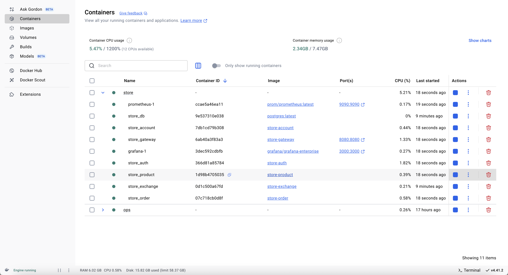
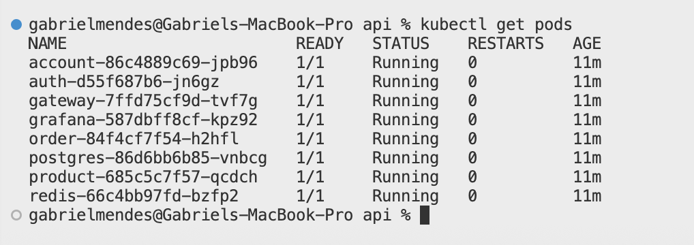

Prometheus & Grafana
Implementamos uma solução de observabilidade no Gateway Service utilizando Prometheus e Grafana para monitorar métricas de todos os microserviços em tempo real.
Em resumo:
- Prometheus coleta e armazena métricas (como uso de CPU, memória, latências, taxa de requisições) expostas pelos serviços via endpoints Actuator/metrics e Prometheus.
- Grafana consome esses dados para criar dashboards interativos, permitindo visualizar tendências, alertas e identificar gargalos (bottlenecks).
No nosso contexto, habilitamos o Spring Boot Actuator e o registro de métricas em Prometheus no Gateway Service. Assim, todas as rotas trafegam pelo gateway e suas métricas são expostas para coleta pelo Prometheus.
Arquivos Modificados
1. pom.xml (Gateway Service)
Adicionamos as dependências para Actuator e Micrometer (prometheus):
<dependency>
<groupId>org.springframework.boot</groupId>
<artifactId>spring-boot-starter-actuator</artifactId>
</dependency>
<dependency>
<groupId>io.micrometer</groupId>
<artifactId>micrometer-registry-prometheus</artifactId>
<scope>runtime</scope>
</dependency>
2. docker-compose.yml
Incluímos os serviços do Prometheus e Grafana:
services:
prometheus:
image: prom/prometheus:latest
hostname: prometheus
ports:
- 9090:9090
volumes:
- $VOLUME/prometheus/prometheus.yml:/etc/prometheus/prometheus.yml
grafana:
image: grafana/grafana-enterprise
hostname: grafana
ports:
- 3000:3000
environment:
- GF_SECURITY_ADMIN_PASSWORD=admin
volumes:
- $VOLUME/grafana:/var/lib/grafana
- $VOLUME/grafana/provisioning/datasources:/etc/grafana/provisioning/datasources
depends_on:
- prometheus
3. application.yml (Gateway Service)
Configuramos o Actuator e o endpoint de métricas para Prometheus:
server:
port: 8080
spring:
application:
name: gateway
cloud:
gateway:
routes:
- id: account
uri: http://account:8080
predicates:
- Path=/account/**
- id: auth
uri: http://auth:8080
predicates:
- Path=/auth/**
- id: exchange
uri: http://exchange:80
predicates:
- Path=/exchange/**
- id: product
uri: http://product:8080
predicates:
- Path=/product/**
- id: order
uri: http://order:8080
predicates:
- Path=/order/**
logging:
level:
store: ${LOGGING_LEVEL_STORE:debug}
management:
endpoint:
gateway:
enabled: true
endpoints:
web:
base-path: /gateway/actuator
exposure:
include: ['prometheus', 'gateway']
Com essa configuração, o Gateway expõe métricas em /gateway/actuator/prometheus.
Capturas de Tela
Abaixo, algumas evidências dos serviços em execução e do monitoramento:
-
Containers Docker rodando
 -
Pods no Kubernetes (incluindo Redis e Grafana)

Como Funciona
- O Prometheus está configurado para “scrape” o endpoint
/gateway/actuator/prometheusdo serviço gateway. - Todas as métricas (latências de rotas, contagem de requisições, status HTTP) são coletadas periodicamente.
- O Grafana foi configurado para usar o Prometheus como fonte de dados, exibindo dashboards com gráficos de performance e alertas.
Dessa forma, conseguimos identificar eventuais bottlenecks (por exemplo, rota com alta latência ou uso elevado de CPU) e tomar ações pró-ativas.